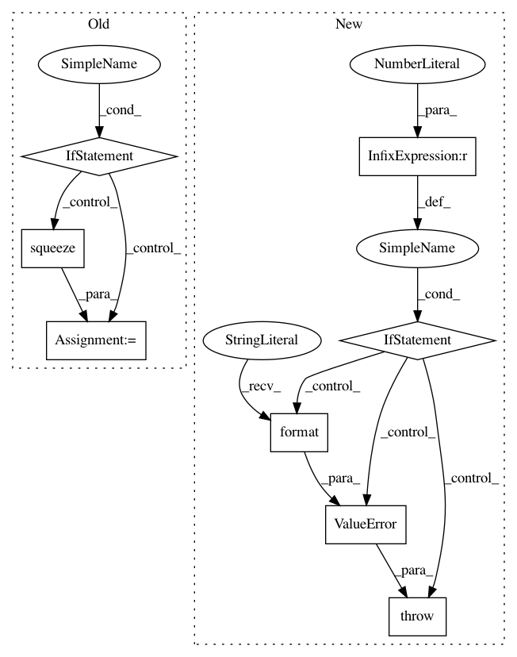

e06eee5deec11dc03d6c4975eb9a57f2bc6edd30,kornia/utils/image.py,,tensor_to_image,#Any#,32
Before Change
tensor = tensor.permute(1, 2, 0)
if len(input_shape) == 2:
tensor = torch.squeeze(tensor, dim=-1)
return tensor.cpu().detach().numpy()
After Change
image: np.array = hw_tensor_to_hw_image(tensor)
elif len(input_shape) == 3:
image: np.array = chw_tensor_to_hwc_image(tensor)
elif len(input_shape) == 4:
image: np.array = bchw_tensor_to_bhwc_image(tensor)
else:
raise ValueError("Cannot process tensor with shape {}".format(input_shape))
return image
In pattern: SUPERPATTERN
Frequency: 3
Non-data size: 8
Instances
Project Name: arraiy/torchgeometry
Commit Name: e06eee5deec11dc03d6c4975eb9a57f2bc6edd30
Time: 2019-05-28
Author: jiangwei1993@gmail.com
File Name: kornia/utils/image.py
Class Name:
Method Name: tensor_to_image
Project Name: sentinel-hub/eo-learn
Commit Name: 01f9d3debc2f1b35a88a2398119809835b4431f0
Time: 2018-12-14
Author: matej.aleksandrov@sinergise.com
File Name: features/eolearn/features/interpolation.py
Class Name: InterpolationTask
Method Name: execute
Project Name: arraiy/torchgeometry
Commit Name: e0e673fa73d2e71ec1c71d60deb6ff9151f387fd
Time: 2019-01-21
Author: edgar.riba@gmail.com
File Name: torchgeometry/conversions.py
Class Name:
Method Name: quaternion_to_angle_axis